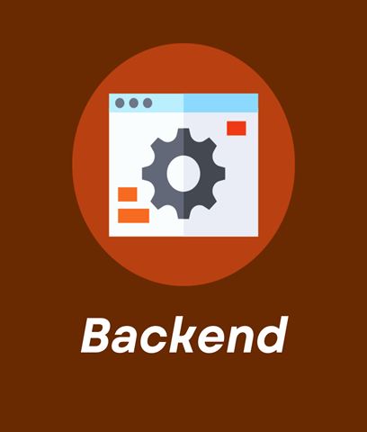

Frontend es la parte de un programa, sitio web o dispositivo a la que un usuario puede acceder directamente. En el contexto de diseño web y desarrollo web, se refiere a todas las tecnologías que corren en el navegador y que se encargan de la interactividad con los usuarios.
El frontend es como la cara visible del sitio, donde se muestra:
El diseño
Los colores
Los botones
Todo lo que puedes ver en la pantalla
También se encarga de hacer que todo funcione correctamente y de responder a tus acciones, como hacer clic en un botón o desplazarte por la página.
Lenguajes en el desarrollo Web
Herramientas en el desarrollo Web
BACK-END
¿Que es Backend?

El backend es la parte invisible pero esencial de un sitio, encargada de manejar la lógica y el procesamiento de datos necesarios para que todo funcione de manera correcta y segura.
El backend se ocupa de tareas como almacenar y recuperar datos de una base de datos, procesar formularios, autenticar usuarios y gestionar la seguridad del sitio. Es responsable de toda la “magia” que sucede detrás de la interfaz visible.
El Backend también accede al servidor, que es una aplicación especializada que entiende la forma en la que el navegador hace solicitudes.
Lenguajes de programación en el desarrollo Back-End
Herramientas en el desarrollo Back-End
Fron-End
Back-End
Se diseña en lenguaje como HTML, CSS y JAVASCRIPT
Se programa en lenguajes como PHP, Pyhton y JAVASCRIPT